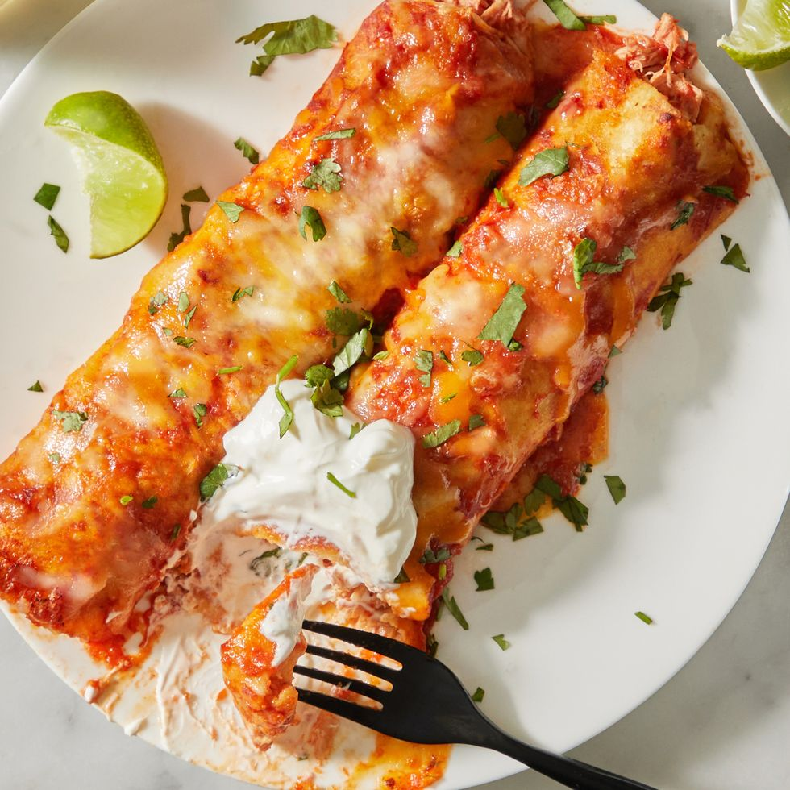

Chicken Enchiladas

Yummy & easy-to-make Chicken Enchiladas!
Feel free to substitute with any meat or sauce of choice!
Ingredients:
- 1/2 yellow onion, coarsely chopped chopped
- 1 red bell pepper, seeds and ribs removed, coarsely chopped
- 2 cloves garlic, coarsely chopped
- 1 tbsp. neutral oil
- 1 tsp. ground cumin
- 2 (10-oz.) cans or 20 oz. homemade enchilada sauce
- 8 oz. canned crushed tomatoes
- 3 c. cooked, shredded chicken
- 1/4 c. chopped fresh cilantro, plus more for serving
- 8 oz. shredded cheddar (about 2 c.), divided
- 8 oz. shredded Monterey Jack (about 2 c.), divided Kosher salt
- 8 (8") flour or corn tortillas, warmed Sour cream and lime wedges,
for serving
Steps:
- Preheat oven to 350°. In a food processor, pulse onion, bell
pepper, and garlic until finely chopped.
- In a large skillet over medium-high heat, heat oil. Add onion
mixture and cook, stirring occasionally, until softened, 6 to
8 minutes. Add cumin and cook, stirring, until fragrant, about
1 minute more.
- Stir in enchilada sauce and tomatoes and cook over medium heat,
stirring occasionally, until warmed through, about 2 minutes.
Reserve 1/2 cup sauce mixture for assembly.
- In a medium bowl, combine chicken, cilantro, 1 cup cheddar, and
1 cup Monterey Jack. Add 1 cup sauce mixture and toss to combine;
season with salt.
- Spread remaining sauce mixture in the bottom of a 13"-by-9"
baking dish.
- Spoon about 2/3 cup chicken mixture into the center of a tortilla.
Roll up tortillas and arrange seam side down on top of sauce along
one short side of baking dish. Repeat with remaining filling and
tortillas, placing each filled tortilla next to the last to form a
row that stretches the length of the dish.
- Spread reserved 1/2 cup sauce mixture on top of tortillas. Sprinkle
with remaining 1 cup cheddar and 1 cup Monterey Jack.
- Bake enchiladas until cheese is bubbling and melted, about 10 minutes.
Top with sour cream and cilantro. Serve with lime wedges alongside.
Return to Homepage